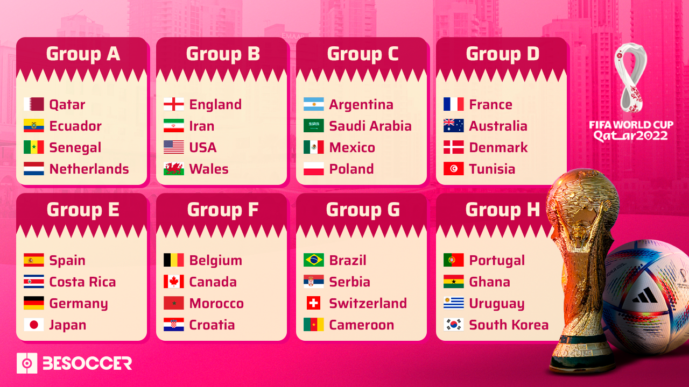
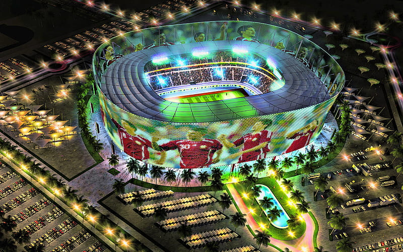

Ya está! El sorteo del Mundial de Qatar 2022 ya tiene configurados los ocho grupos de
la Copa del Mundo que arrancará el próximo 21 de noviembre. Las 32 selecciones clasificadas están
aquí. ¿Cuál es el grupo de la muerte? ¿Qué le ha tocado a Argentina? Entrá para conocer todos los
grupos.

En este apartado conocerás todas las fechas y horarios de los partidos así como también
los posibles cruces a partir de los 8vos de final y hasta la gran final que se disputará en el Estadio
icónico de Lusail, ubicado en el municipio de Al Daayen. No te lo pierdas!

El Mundial de Qatar 2022 está cada vez más cerca y sólo queda tachar los días.
El sorteo ya está definido y finalmente se conocieron las 32 selecciones que completan el mapa, que se
selló con la clasificación de Costa Rica tras derrotar 1-0 a Nueva Zelanda en el Repechaje.

Conocé los ocho Estadios maravillosos que albergarán la XXII edición de la Copa del
Mundo.
